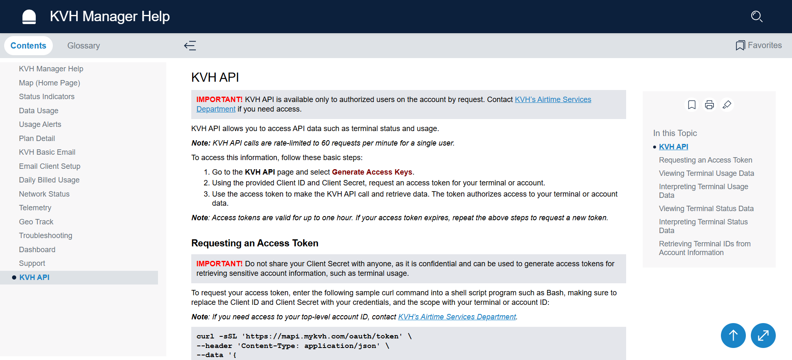

KVH API Help Page
Problem: Customers needed quick, easy access to information about KVH terminals, usage data, and status updates. The goal was to help users quickly understand the functionalities of the KVH API to access relevant information efficiently.
Solution: I attended meetings with key customers to gather their needs and understand their workflows. Based on their feedback, I created a standalone Online Help topic using Adobe RoboHelp. This included incorporating sections for KVH terminal status, usage statistics, and an easy-to-navigate layout that highlighted core features of the API.
Outcome: The page streamlined customer workflows and reduced their reliance on support. By addressing key customer needs, I provided clear, accessible information and improved the overall user experience
